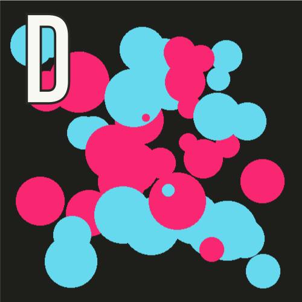

Windows & Clicky Clicky
Jed Rembold & Fred Agbo
February 21, 2024
Announcements
- Grading for PS3 is returned! Ask me questions if you’ve got one regarding it
- We are in Ch6 of the text this week, which is interactive graphics
- Remember the 1st midterm exam is this Friday Feb 23
in this hall
- Test objectives and first practice questions were sent on Monday
- Second practice questions will be opened today: Canvas demo, in-clase today!
- Those with accommodations with Testing Center should contact them to make arrangement NOW! and cc me in the email
- Polling continues https://www.polleverywhere.com/agbofred203
Review Question
Which of the below images is the mostly likely output of the code to the right?



def make_circle(x,y,r):
c = GOval(x-r, y-r, 2*r, 2*r)
c.set_filled(True)
if randint(1, 100) > 75:
c.set_color("#F92672") #pink
else:
c.set_color("#66D9EF") #blue
return c
gw = GWindow(500, 500)
for i in range(50):
gw.add(make_circle(
randint(50,450),
randint(50,450),
randint(5,50)
)
)In the Window
- A common tactic is to store all variables that need to be shared between two or more functions in a state object
- A state object is just a single object which serves as a storage space for a collection of values
- The object is created in such a location as to ensure it is in the closure of any functions that need to access its contents
- We will most often encounter this issue with graphics applications,
where we actually already have an object that could serve as a state
object
- The
GWindowobject (mostly commonly namedgw)!
- The
Storage and Retrieval
- Do you want to store a value in your state object?
- We can store it as an attribute to the
gwobject - Requires specifying the object name, followed by a dot and then your desired attribute name:
gw.my_attribute_name = some_cool_value - We can store it as an attribute to the
- Do you want to retrieve a value from your state object?
Just refer to the object and attribute name:
print(gw.my_attribute_name)
Fixed Line-Drawing
from pgl import GWindow, GLine
WIDTH = 500
HEIGHT = 500
def draw_lines():
def mousedown_event(e):
x = e.get_x()
y = e.get_y()
gw.line = GLine(x,y,x,y)
gw.add(gw.line)
def drag_action(e):
gw.line.set_end_point(e.get_x(), e.get_y())
gw = GWindow(WIDTH, HEIGHT)
gw.line = None
gw.add_event_listener("mousedown", mousedown_event)
gw.add_event_listener("drag", drag_action)
if __name__ == '__main__':
draw_lines()Timer Events
- Previously we looked at how our programs could react to mouse events
- Can also listen for timer events, which occur after a specific time interval
- You specify the listener for a timer event in the form of a callback function that is invoked at the end of the time interval
- Can add animation to our graphics by creating a timer whose callback
makes small updates to the graphical objects in the window
- If the time interval is short enough (usually sub 30 milliseconds), the animations will appear smooth to the human eye
Timer Types
- PGL supports two kinds of timers:
- A one-shot timer invokes its callback only
once after a specified delay
Created with
gw.set_timeout(function, delay)where
functionis the callback function anddelayis the time interval in milliseconds
- An interval timer invokes its callback function
repeatedly at regular intervals
Created with
gw.set_interval(function, delay)
- A one-shot timer invokes its callback only
once after a specified delay
- Both methods return a
GTimerobject that identifies the timer, and can be stopped by invoking the.stop()method on that timer
Moving Square
def moving_square():
def step():
square.move(dx, dy)
if square.get_x() > 500:
timer.stop()
gw = GWindow(500, 200)
dx = 1
dy = 0
square = create_filled_rect(12, 100, 24, 24, "red")
gw.add(square)
timer = gw.set_interval(step, 20)Growing Circles
Mid-term test
- Test will take place during the class time 0n Friday.
- Those with accommodations should already contact the testing center and cc me.
- Practice questions are posted on this week’s module
- Basic things to keep in mind:
- The test contain detailed information to guide on what to expect. Read it carefully
- The exam is partially open, and thus you are free to utilize:
- The text
- Your notes
- Class slides
- Any past work you have done as part of sections, problem sets, or projects, provided it has been uploaded, and you access it through GitHub.
Mid-term test
- You are allowed to use a computer for ease of typing and accessing the above resources,
- You are prohibited from accessing and using any
editor or terminal to run your code.
- Visual Studio Code or any similar editor should never be open on your computer during this exam.
- Additionally, you are prohibited from accessing outside internet resources beyond the webpages described above.
- practice questions (2 at least) will be posted today and Wednesday
- first practice questions would be sent in PDF
- second practice questions would be on canvas